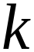

Bài 5 · Động năng, thế năng, sự chuyển hoá năng lượng · 20 câu
PHẦN I. Câu trắc nghiệm nhiều phương án lựa chọn
Mỗi câu có 4 phương án, chỉ chọn một đáp án đúng (0,25 điểm).
1
Nhận biết
Một vật nhỏ khối lượng m dao động điều hòa trên trục Ox theo phương trình $x=A\mathrm{cos}\left( \omega t+\varphi\right)$. Cơ năng của vật được xác định bằng biểu thức?
2
Nhận biết
Một vật nhỏ khối lượng m dao động điều hòa trên trục Ox theo phương trình $x=A\mathrm{cos}\left( \omega t+\varphi\right)$. Động năng của vật tại thời điểm t có biểu thức là?
3
Nhận biết
Một con lắc lò xo dao động điều hoà, cơ năng toàn phần có giá trị là $W$ thì:
4
Nhận biết
Một vật nhỏ khối lượng m dao động điều hòa với phương trình li độ $x = A\cos(\omega t + \varphi)$. Cơ năng của vật dao động này là
5
Nhận biết
Một con lắc lò xo gồm vật nhỏ khối lượng và lò xo nhẹ có độ cứng

đang dao động điều hòa theo phương nằm ngang với biên độ . Mốc thế năng ở vị trí cân bằng. Khi vật có li độ thì động năng của con lắc là
6
Nhận biết
Trong dao động điều hoà của con lắc lò xo, cơ năng của nó bằng:
7
Nhận biết
Biểu thức tính cơ năng W của một vật có khối lượng m dao động điều hòa với tần số góc $\omega$ và biên độ A là
8
Nhận biết
Một con lắc lò xo có khối lượng vật nhỏ là m dao động điều hòa theo phương ngang với phương trình $x = A\cos\omega t$. Mốc tính thế năng ở vị trí cân bằng. Cơ năng của con lắc là:
9
Nhận biết
Jun (J) là đơn vị đo của đại lượng Vật lí nào sau đây?
10
Nhận biết
Một vật dao động điều hòa theo phương ngang với phương trình $x = A\cos(\omega t)$ (với x và A tính bằng mét). Mốc tính thế năng ở vị trí cân bằng. Cơ năng của vật dao động điều hoà được tính bằng biểu thức
11
Nhận biết
Đại lượng nào sau đây tăng gấp đôi khi biên độ của dao động điều hoà của con lắc lò xo tăng gấp đôi?
12
Nhận biết
Trong dao động điều hoà thì tập hợp ba đại lượng nào sau đây không thay đổi theo thời gian?
13
Nhận biết
Một chất điểm có khối lượng $m$, dao động điều hoà với biên độ $A$, tần số góc $\omega$. Động năng cực đại của chất điểm là
14
Nhận biết
Trong dao động điều hòa của con lắc lò xo, cơ năng của nó bằng:
15
Nhận biết
Một con lắc lò xo dao động điều hòa, cơ năng toàn phần có giá trị là W thì:
16
Nhận biết
Đối với một chất điểm dao động cơ điều hòa với chu kì $T$ thì:
17
Nhận biết
Một con lắc lò xo có khối lượng vật nhỏ là m dao động điều hòa theo phương ngang với phương trình x = Acos$\omega$t. Mốc tính thế năng ở vị trí cân bằng. Cơ năng của con lắc là
18
Nhận biết
Một chất điểm khối lượng m dao động điều hòa trên trục Ox theo phương trình $x=A\mathrm{cos}\left( \omega t+\varphi\right)$. Động năng của chất điểm có biểu thức là
19
Nhận biết
Khi nói về một vật dao động điều hòa, phát biểu nào sau đây sai?